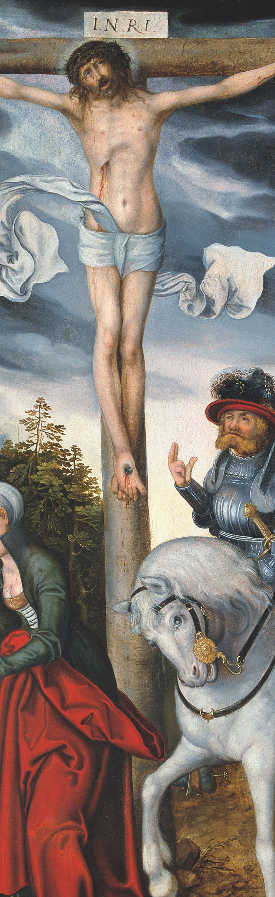
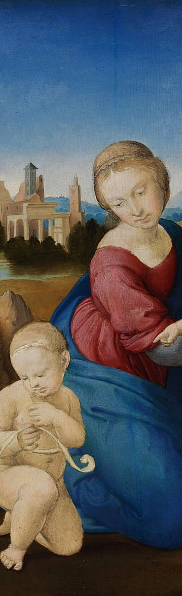
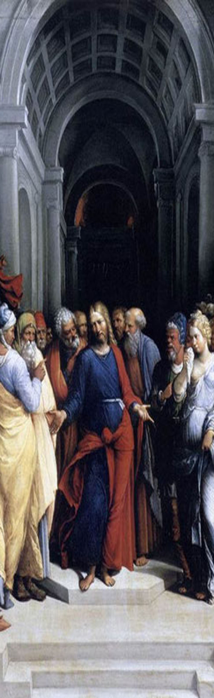
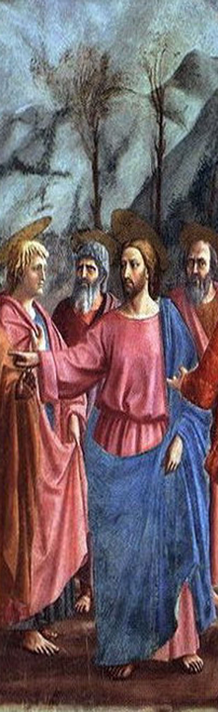
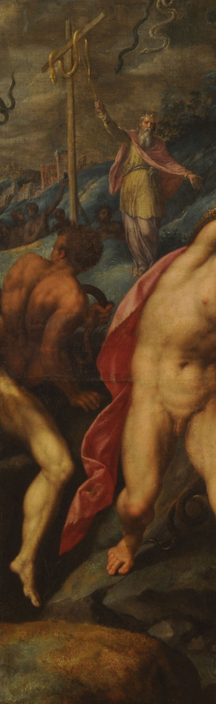

Bienvenidos a el proyecto de investigacion.
Bienvenidos a el proyecto de investigacion.
Renacentismo en profundidad
En estas obras se podrá observar las formas en que los artistas del renacimiento juegan con las siguientes técnicas:
Técnicas del color, utilizando tonos cálidos para realzar escenas principales y tonos fríos para poner en contraste los fondos, además de usarse para dar dramatismo y otorgar perspectiva.
Técnicas en la geometría, utilizando puntos de fuga con una perspectiva lineal, se utilizaba la escala del cuerpo humano para demostrar lejanía y también se utilizaba la simetría.
Técnicas para otorgar profundidad, estas dependían de lo que el autor quisiera demostrar, podría difuminar las zonas mas lejanas, utilizar obras arquitectónicas o en todo caso utilizar distintas capas en donde la final seria la mas lejana y la del frente la mas próxima al espectador




